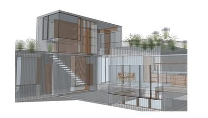
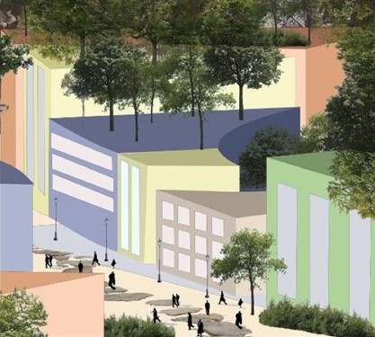

Arkitektur og samfunn er et spennende praktisk fag der du lærer mye, blandt annet hvordan arkitektur, natur og samfunn gjensidig påvirker hverandre
Arkitektur og samfunn
Rask oversikt
Dette lærer du
- Hvordan arkitektur, natur og samfunn gjensidig påvirker hverandre
- Viktigheten av å ha et ansvar for omgivelsene rundt oss i samfunnet
- Utvikle dine praktiske ferdigheter i å tegne og utforme konstruksjoner
- Digital programvare som Sketch-up
- Laserkutting og 3D-printing
Dette gjør vi
- Designer arkitekturtegninger for hånd og digitalt
- Samarbeider med byutviklere og andre eksterne aktører
- Opplever og utforsker ulike former for arkitektur
- Bruker relevante verktøy i utforming og presentasjon av arkitektur
Faget er nyttig fordi
- Du blir bevisst på sammenhengen mellom arkitektur, natur og samfunn
- Du danner deg meninger og kan delta i samfunnsdebatten om byutvikling og fremtidens arkitektur
- Du får kjennskap til prosesser for å skape god arkitektur som tar hensyn til mennesker og miljø
- Det gir det et godt grunnlag for videre studier, både akademiske og kreative

